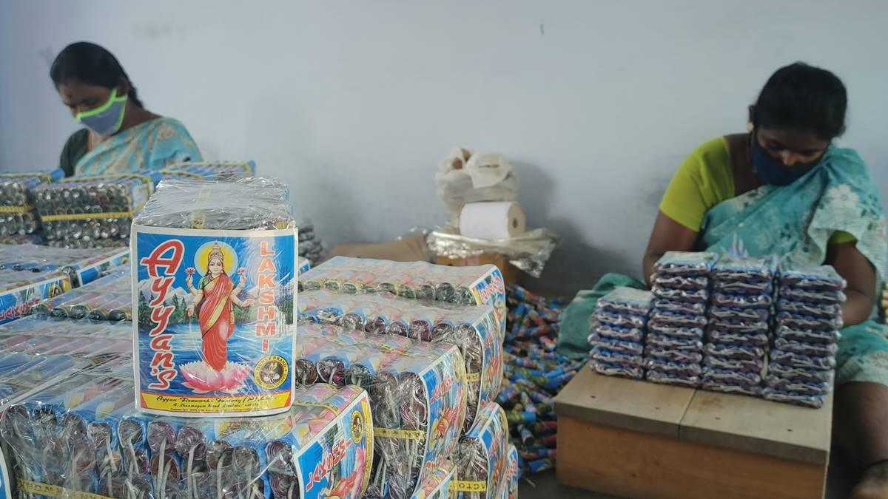
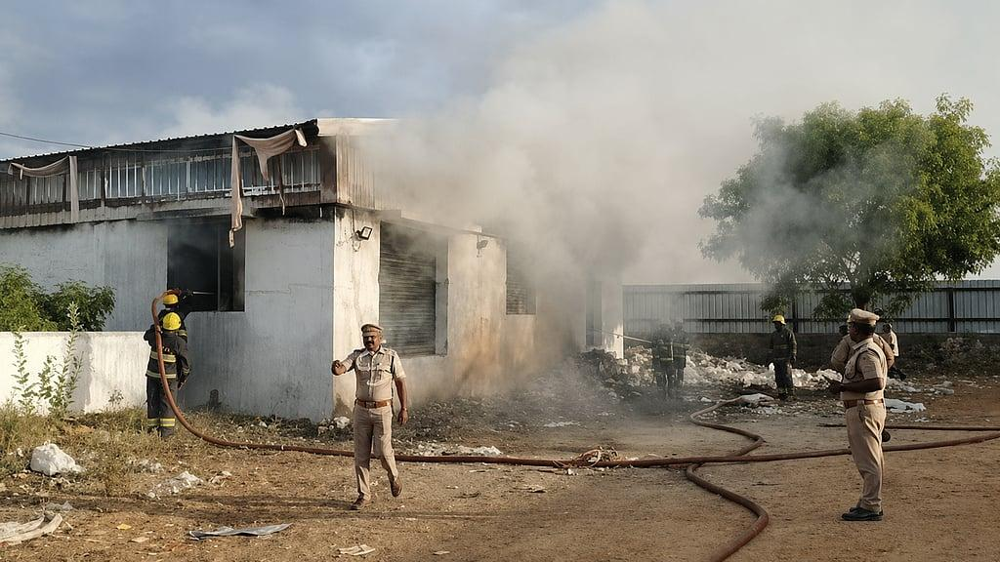
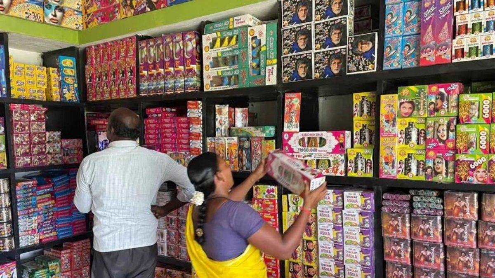

Roots of Sivakasi
How Fireworks Came to Sivakasi
Sivakasi's industrial journey started with the match manufacturing industry. During the early twentieth century, entrepreneurs introduced match manufacturing knowledge and business activities to the town.
The development of match industries created opportunities for new businesses. Over time, fireworks production also began to develop using industrial experience, business knowledge and skilled workers.
Small businesses gradually expanded into larger production units. The fireworks industry began attracting more workers, traders and customers from different parts of India.
How Sivakasi Became Famous for Fireworks
Sivakasi became famous for fireworks through continuous industrial development and the growth of local businesses.
1. Development of Match Industries
Match manufacturing provided an industrial foundation for the town. Business experience, workers and supporting industries helped fireworks production grow gradually.
2. Entrepreneurship and Hard Work
Local business owners established small production units and expanded their businesses over the years. The dedication of workers and entrepreneurs played an important role in Sivakasi's industrial development.
3. Festival Demand
Festivals, especially Diwali, created a large demand for fireworks. Products manufactured in Sivakasi reached customers across many states in India.
4. Supporting Industries
Printing, packaging, transportation, wholesale markets and retail shops also developed around the fireworks industry. These businesses helped the town's economy grow.
5. National Recognition
Over time, Sivakasi became a major name in India's fireworks market. Its products, industries and business activities made the town widely recognised throughout the country.
Why Is Sivakasi Called "Kutty Japan"?
Sivakasi is popularly known as "Kutty Japan", which means "Little Japan."
This nickname reflects the town's remarkable industrial growth, hardworking people and manufacturing activities.
Just like Japan is widely associated with industries and manufacturing, Sivakasi became famous for its fireworks, matchboxes, printing and commercial activities.
The nickname represents the dedication, creativity and determination of the people who contributed to the town's growth.
Sivakasi Fireworks Industry Today

Today, Sivakasi is one of India's major fireworks manufacturing centres. The industry supports thousands of workers and businesses and plays a major role in the local economy.
Industry at a Glance
1,070+
Licensed fireworks units (reported estimate)
₹7,000 Crore
Estimated industry turnover
3 Lakh
Estimated direct employment
The industry provides employment to workers involved in production, packing, transport, sales and other supporting activities.
Many families and small businesses depend directly or indirectly on this industry for their livelihood.
Firework Factory Accidents and Losses

Although the fireworks industry provides employment and supports the economy, it also involves serious risks. Accidents in fireworks manufacturing units have caused tragic losses of human lives, injuries and property damage.
Major Losses Caused by Accidents
- Loss of precious human lives
- Serious injuries and long-term disabilities
- Damage to factory buildings and equipment
- Loss of income for affected workers and families
- Emotional suffering for families and communities
- Financial loss for business owners and workers
Reports have recorded numerous deadly fireworks factory accidents in the region over the years. These incidents highlight the importance of proper safety practices, trained workers, inspections and responsible industrial management.
Safety Awareness
Fireworks are not toys. They can cause serious injuries, fires and loss of life. Children should never handle fireworks without responsible adult supervision.
Fireworks Sales and Market Growth

Diwali is the biggest sales season for Sivakasi fireworks. During this period, fireworks are distributed to shops and customers across different parts of India.
The fireworks market has grown considerably because of festival celebrations, distribution networks and the popularity of fireworks among people.
Reported Diwali Sales
2024: Approximately ₹6,000 Crore
2025: Approximately ₹7,000 Crore
These figures are reported industry estimates and show the scale of the fireworks market during the festival season.
A Town Built on Industry and Hard Work
Sivakasi is more than a fireworks town. It represents the hard work, determination and business spirit of thousands of people.
From its early industrial beginnings to becoming a major fireworks manufacturing centre, Sivakasi has created a unique place in India's industrial history.
Its growth and achievements are important, but protecting the lives of workers and maintaining safety must always remain a priority.
Listen to Cracker Sounds
Different fireworks produce different sounds during celebrations. Listen to these audio samples.
Cracker Sound Gallery
Anu Kundu
Chini Vedi
Saram
Lakshmi Vedi
Atom
⚠️ Loud cracker sounds may affect children, elderly people and pets. Listen at a low volume.
PDF Gallery
Explore more information about Sivakasi, fireworks, its history and safety awareness through the documents below.